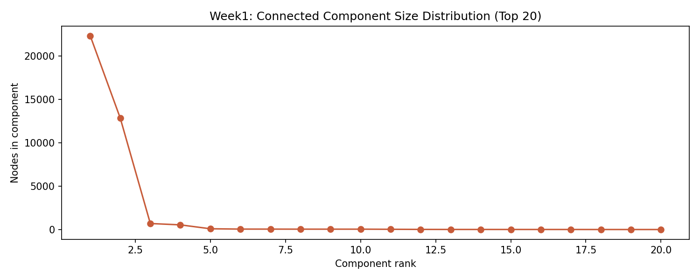
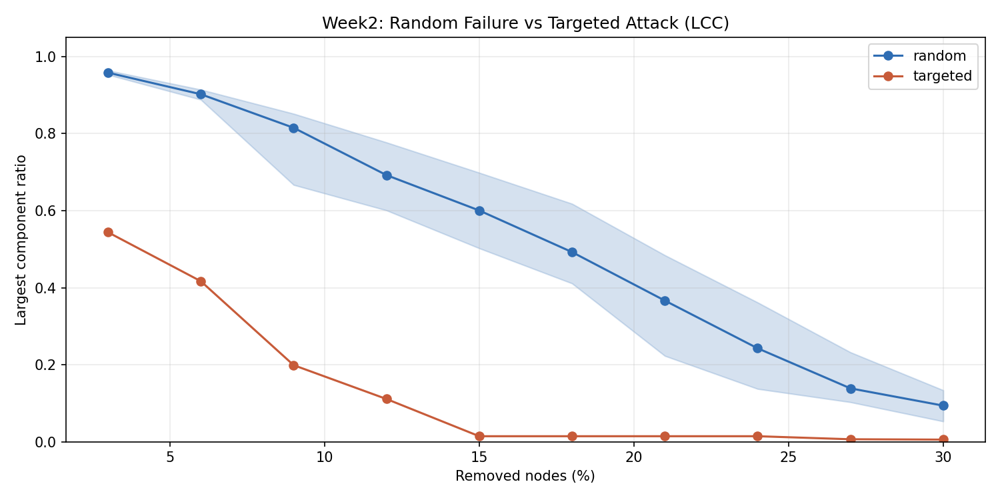
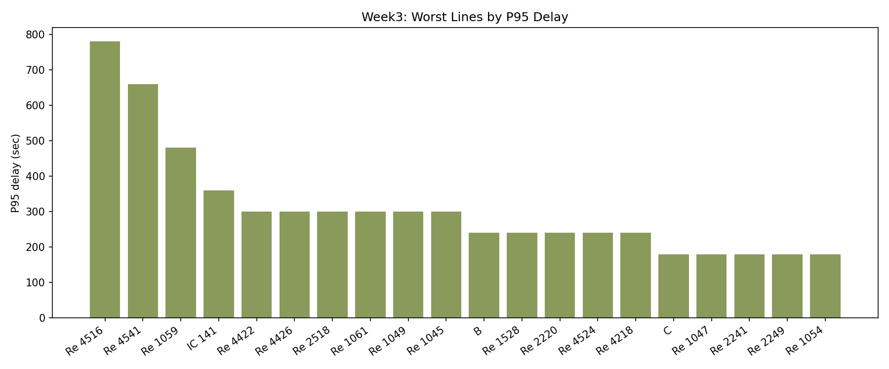
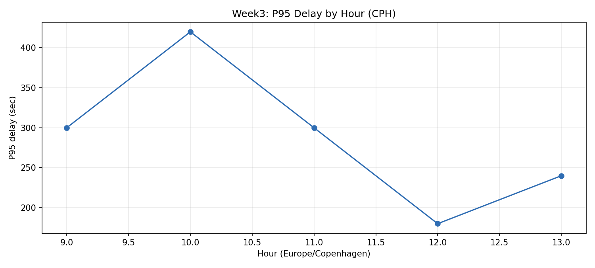

Reliability benchmark
E currently anchors the reliable end of the portfolio with a 60s P95 tail.
Company-Facing Reliability Review
This offline page packages the repository's committed Week1-Week3 outputs into one narrative: network structure, failure sensitivity, line-level reliability, and early transfer-risk decisions. It is designed for internal review, partner demos, and management conversations where the audience needs a business-ready view rather than raw notebooks.
E currently anchors the reliable end of the portfolio with a 60s P95 tail.
Re 4516 should be the first candidate for targeted intervention, with a 780s P95 tail.
The committed 24h Task A summary shows 7.3% coverage, so operational completeness should still be read alongside the seven-day conclusions.
High-level performance and exposure signals for management review.
E leads the portfolio with a 60s P95. The company-facing message is that the network already has visibly dependable services worth using as operational benchmarks.
Re 4516 reaches a 780s P95 tail. That is where delay communication, schedule padding, and intervention planning should start.
At 15% node removal, targeted failures shrink the largest connected component from 0.600 to 0.014. The network is bridge-sensitive, not evenly resilient.
Filter the reliability ranking, focus a single line, and compare its tail delay against the broader portfolio.
The ranking chart responds to the active filter. Click a row to pin a line.
| Line | Band | Rank | P50 | P90 | P95 | Average | Samples |
|---|
The map is a schematic coordinate view built from GTFS stop locations. It highlights where connectivity concentration and vulnerability overlap.
No external basemap is used. This view intentionally stays offline and reproducible inside the repo.
| stop | type | metric | value |
|---|---|---|---|
| Skive Trafikterminal | hub | Degree | 42 |
| Odder Busterminal | hub | Degree | 35 |
| Randers Busterminal | hub | Degree | 35 |
| Hadsten St./Østergade | hub | Degree | 27 |
| Middelfart Station (Middelfart Kommune) | hub | Degree | 22 |
| Haderslev Busstation | hub | Degree | 22 |
| Hobro Busterminal (H.I. Biesgade) | hub | Degree | 20 |
| Rosen Allé (Ribe) | hub | Degree | 17 |
Static fragility, observed delay patterns, risk-model confidence, and route trade-offs are shown together so the research can support operational decisions.
Largest connected component retention under random and targeted removals.
P95 delay profile in Copenhagen local hour.
Current model remains mode-level with explicit fallback logic when sample sizes thin out.
| line | mode | p95 | CI low | CI high | evidence | source |
|---|---|---|---|---|---|---|
| C | ST | 120s | 0s | 0s | low | global |
| F | ST | 120s | 0s | 0s | low | global |
| H | ST | 120s | 0s | 0s | low | global |
Sample candidate paths show the travel time versus robustness trade-off.
| od | path | travel time | transfers | miss prob | CVaR95 | confidence |
|---|---|---|---|---|---|---|
| CPH_H_CPH_AIRPORT | path_a | 24.0 min | 1 | 0.083 | 4.0 min | medium |
| CPH_H_CPH_AIRPORT | path_b | 28.0 min | 0 | 0.083 | 4.0 min | medium |
| NORREPORT_LYNGBY | path_a | 22.0 min | 1 | 0.083 | 4.0 min | medium |
| NORREPORT_LYNGBY | path_b | 26.0 min | 0 | 0.083 | 4.0 min | medium |

Static connectivity footprint of the national GTFS graph used as the baseline.

Published robustness curve comparing random failures to betweenness-targeted attacks.

Committed seven-day line ranking by P95 delay.

Delay tail by Copenhagen local hour from the committed BQ-derived analysis.
The dashboard is generated from committed markdown, CSV, JSON, and PNG artifacts so it remains auditable and safe to open locally.
week1_summary.md../results/robustness/summary.md../results/robustness/top10_vulnerable_nodes.csv../data/analysis/reports/week3/dt=2026-03-02/summary.json../data/analysis/week3_line_reliability_rank.csv../data/analysis/week3_hour_dow_quantiles.csv../data/analysis/router_pareto_table.csv../data/analysis/risk_model_mode_level.csv